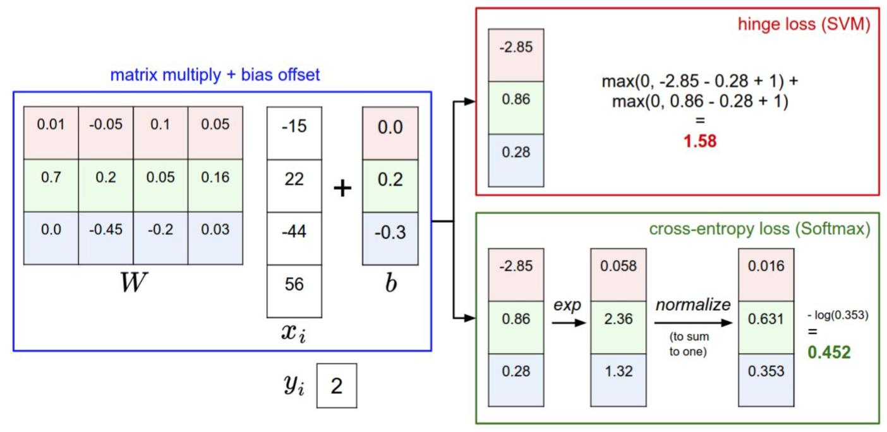

「CS231n Course 2」损失函数
Part 0 前言
参考资料：
Part 1 损失函数
损失函数，Loss Function，用于衡量我们对（评分函数给出的）结果的不满意程度。具体地，当评分函数输出结果和真实结果之间差异越大，损失函数越大，我们“越不满意”。
损失函数由多种形式，以下是一些常用损失函数。
多类支持向量机损失（Multiclass Support Vector Machine Loss）
核心思想
SVM的损失函数希望SVM在正确分类上的得分始终比不正确分类上的得分高出一个边界值$\Delta$；如果满足，则损失值为0；如果不满足，则开始计算损失值。
例子
第$i$个数据包含图像$x_i$（的像素）和其正确的分类标签$y_i$。评分函数$f$对于输入像素数据，由公式$f(x_i, W)$计算不同分类类别的分值，记为$s$。如，对第$j$个类别的得分是$s_j=f(x_i, W)_j$，针对第$i$个数据的多类别SVM损失函数定义如下：
其中，$\Delta$是一个超参数，是某种“安全边距”。
举例而言，有三个分类，分值为$s = [13, -7, 11]$。第一个类别是正确类别，即，$y_i=0$，且我们假设$\Delta=10$，则根据上述公式代入计算得：
其中，
$max$函数中，第一项是$0$，第二项是用第1个类别的（评分函数）得分减去正确类别（$y_i$，第0个类别）的得分，再加上超参数$\Delta$。可以这样理解：当对于该类别加上超参数$\Delta$（安全边距）后，正确类别（$y_i=0$）的得分仍高于该值，那么说明这一项没有损失，即取$max$函数的前项$0$；反之，说明正确类别并没有高出错误类别一个安全边距，则差值即为该项产生的损失。
特别地，线性评分函数如下：
那么可以得到$s_j$即$s$的第$j$行为（注意，这里行列向量意会即可，似乎和上文中的并不符合）：
$s_{y_i}$为：
因此，SVM的损失函数可以表达为：
折叶函数（hinge loss）
hinge loss，也叫合页（损失）函数或折页（损失）函数（因为他长得像hinge）。它的表现形式如下：
一般情况下提到hinge loss即是如上的版本。特别地，有时候会使用平方折叶损失（即L2-SVM）
正则化（Regularzition）
在训练过程中，可能存在以下问题：
- $W$不唯一，很多相似的$W$可以正确分类所有数据
- 过拟合
正则化即为某些特定的（也可以是全部）权重$W$添加一些偏好，对其他不添加，以消除模糊性。具体地，向损失函数增加一个正则化惩罚（regularition penalty）$R(W)$。
最常用的正则化惩罚是L2范式，对所有参数进行逐个元素的平方惩罚来抑制大数值的权重：
上式将$W$中所有元素平方后求和。完整的多类SVM损失函数如下：
其中，$\frac{1}{N}\sum_{i}L_i$是数据损失（data loss），即所有样例的平均损失；以及$\lambda R(W)$正则化损失（regularization loss）
Softmax分类器
关于Softmax函数的名字含义，可以这样理解：max函数仅输出最大值，而Softmax确保较小的值有较小的概率，不会直接丢弃，因此可以认为其是argmax函数的概率版本或soft版本
SVM和Softmax分类器是最常用的两个分类器，Softmax分类器可以理解为逻辑回归分类器面对多个分类的一般化归纳。
Softmax的损失函数和SVM有所不同。具体地，SVM是将$f(x_i, W)$作为每个分类的评分，由于没有定标，因此难以解释含义。而Softmax的输出是归一化的分类概率，更加直观，而且可以从概率上解释。Softmax分类其中函数映射$f(x_i;W)=Wx_i$保持不变，但会对评分值视为每个分类的未归一化时的对数概率，根据这个表述，我们知道将该值先进行指数化，再归一化即可得到每个分类的概率。Softmax将SVM的折叶损失（hinge loss）替换为交叉熵损失（cross-entropy loss）：
上式中，各值的含义如下：
- $f_j$：分类评分向量$f$中的第$j$个元素
和SVM相同，整个数据集的损失值是数据集中所有样本数据的损失值$L_i$的均值与正则化损失$R(W)$之和。其中，下式被称为Softmax函数：
该函数的解释为：输入值是一个向量$z$，其元素为任意实数的评分值，函数对其进行压缩，输出一个向量，其中每个元素值在$0$和$1$之间，且所有元素之和为$1$。
SVM和Softmax的比较

首先，可以注意到两者的$f$在这里都使用了普通的矩阵乘法$W x_i$；
其次，观察到SVM对矩阵乘法的结果直接使用折叶损失函数（hinge loss），其中的超参数$\Delta$这里选择了$1$；
然后，观察到Softmax首先对$f$的结果取exp，然后进行归一化（得到各分类的概率），再然后取$-log$得到损失（对正确答案的分类概率进行$-log$）。
可以注意到，SVM对于”安全边距“以上的答案不予关心，认为损失为$0$，而由Softmax损失函数的计算公式可以知道，Softmax永远不会对答案满意，会不断调整来降低损失值。
一个用于理解线性分类器和损失的交互式网页
Part 2 优化
（最）优化，optimization，是寻找能使得损失函数值最小化的参数$W$的过程。
方案
方案1：随机搜索
随机尝试很多不同的权重，看哪个最好，将其中表现最好的权重$W$取出。
这个方案不好，在验证集的表现是15.5%，比完全随机猜测的结果（10%）略好。
方案2：随机本地搜索
每一个策略是每走一步随机尝试几个方向，若某个方向是向下的，则继续向这个方向走。具体地，从一个随机的$W$开始，生成一个随机的扰动$\delta W$，仅有$W + \delta W$的损失值变小时才更新。
方案3：跟随梯度
方案2中我们其实是在权重空间中尝试找到一个方向，使得沿着该方向可以降低。而梯度（gradient）恰好是这样一个数学概念，计算出某个点的各个方向的倾斜程度，以便选择最陡峭的方向下山。
一维函数种，斜率是某点的瞬时变化率；梯度是函数斜率的一般化表达，不是一个值，而是一个向量。在输入空间中，梯度是各个维度的斜率（偏导数）组成的向量。
具体地，一维函数的求导公式（定义式）如下：
当函数有多个参数的时候，即非一维函数，此时改称偏导数。梯度就是每个维度上的偏导数为元素组成的向量。
梯度计算
梯度计算主要有两种方法：
- 数值梯度法：实现简单的近似方法，但是慢
- 分析梯度法：计算迅速，结果精准，但是实现时容易出错
数值梯度法
取一个很小的$h$（实践中在$10^{-5}$级别），使用定义式计算。
优点：实现简单
缺点：是近似，有误差，计算开销大
分析梯度法
使用微分分析的方法计算梯度，结果精准且速度快，但是容易出错，实践中常常将分析梯度法的结果和数值梯度法的结果相比较，验证分析梯度实现的正确性，这个步骤叫做梯度检查（gradient check）。
以SVM的损失函数（hinge loss）为例：
对函数微分得：
其中，$\mathbb{l}$是一个示性函数，即对括号内的条件进行判断，若为真，则式值为1，否则为0。该公式的意思为，计算（计数）没有满足安全边距的分类的数量（这些分类对损失函数产生了贡献），然后乘以$x_i$，即得到梯度。该公式是对应正确分类的$W$的行向量的梯度，那么$j \ne y_i$行的梯度是：
小批量数据梯度下降（Mini-batch gradient descent）
大规模应用中的训练数据是百万量级的，训练成本很高，常用的方法是计算训练集中的小批量（batches）数据。如，在比较先进的CNN中，一个典型的小批量包含256个样本，而整个训练集的数量级在120万。
学习率
学习率，也叫步长，是神经网络训练中最重要的超参数设定之一。如果步长太小，则进度稳定但缓慢；若步长太大，进度快但有风险。
This is copyright.